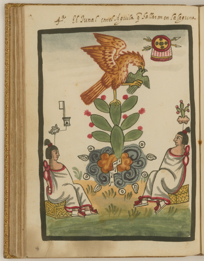
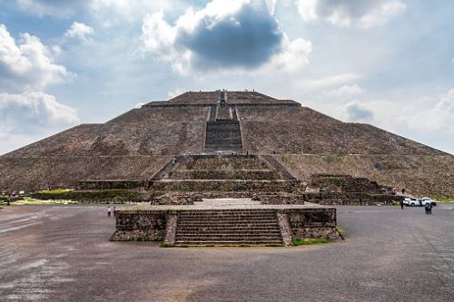
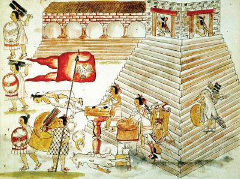
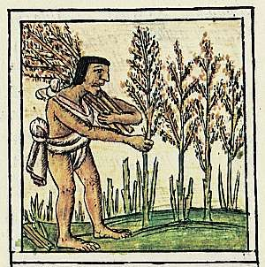
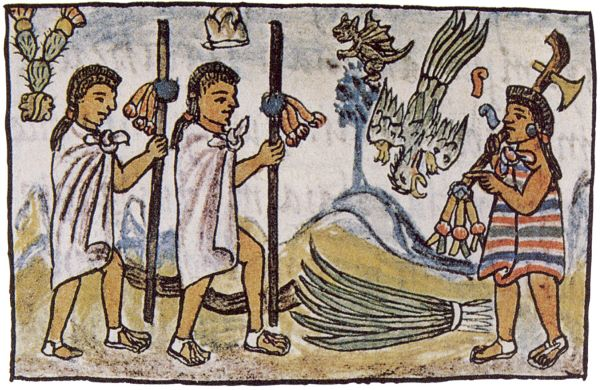
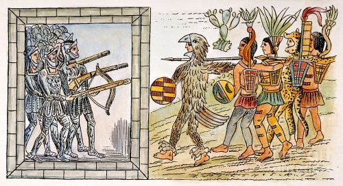

The Mēxihcah, better known as The Aztecs, were a nothern tribe that migrated into southern Mesoamerica in the late 1200's.
Despite their rich history, the exact origins of the Aztecs remains a mystery, leaving historians with unanswered questions about their appearance.
While the mystery of their background persists, what is clear is that the Aztecs eventually settled in the fertile basin of Lake Texcoco,
where they would go on to establish one of the most remarkable civilizations in Mesoamerican history.
Legends and Settlement

Illustration of Tenochtitlan Origin
Legends speak that the Aztecs were told by their gods to settle down from their journey once they found a lake with an eagle eating a snake atop a prickly pear cactus.
According to these ancient tales, the gods provided the Aztecs with a divine sign, guiding them to the site where they were destined to build their great city.
The symbolic image of the eagle, snake, and cactus became a powerful emblem for the Aztecs, representing the fulfillment of a sacred prophecy and serving as a spiritual bind for their civilization.
This mystical guidance, combined with the advantages of the lake's resources, played an important role in the establishment of their capital, Tenochtitlan.
Founding of Tenochtitlan

Image of Tenochtitlan Temple
After hundreds of years of wandering, they saw the sign from their god on a small island within the waters of Lake Texcoco.
The Aztecs built their capital city on Lake Texcoco, renaming it Tenochtitlan.
Aztec Alliances

Illustration of Conquor
The Aztecs would become more powerful and began to form alliances with neighbouring states such as Texcoco and Tlacopan.
As their military forces grew, they began to conquer surrounding areas. Tenochtitlan came to rule an empire of 400 to 500 small states by the late 1510s.
Tenochtitlan's Significance
Aztec Farming

Illustration of Farmers
The city of Tenochtitlan soon became one of the largest cities in the world, where farming and architecture were primarily what it was known for.
Aztec Agriculture was well advanced for the time, providing a sustanable amount of food for its high population.
A Chinampas system was used to overcome swampy grounds.
Aztec Traders

Illustration of Aztec Traders
Aztec Traders, also known as Pochteca, traded in central regional markets located in every city-state within the Aztec Empire.
For instance, the city of Tlatelolco had a central marketplace with an estimated range of 60,000 people trading daily.
The Spanish
Spanish Conquest

Illustration of Spanish Conquest
As the Aztec Empire expanded its territories, the arrival of the Spanish in 1519 brought about a halt to the empire's growth.
The Spanish capitalized on the hatred that various tribes had due to their lands
being conquered by the Aztecs during the Aztec Empire.
This led to thousands of Native American warriors to aid the Spanish Invasion,
upping their advantages and success in their conquer
After a brutal two year war, The Spanish had taken over Tenochtitlan, and the Aztec empire came to an end...